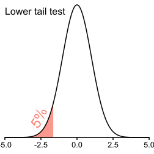
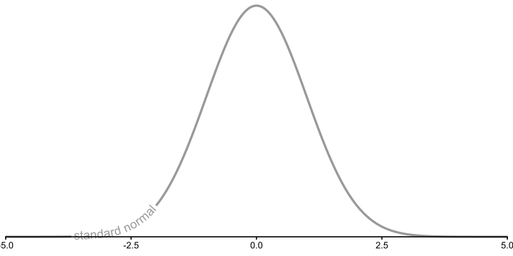
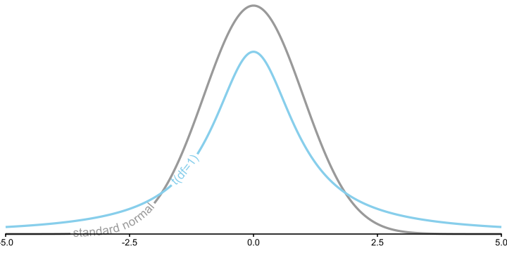
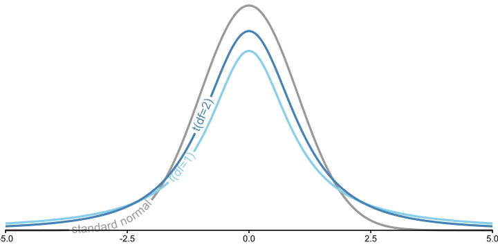
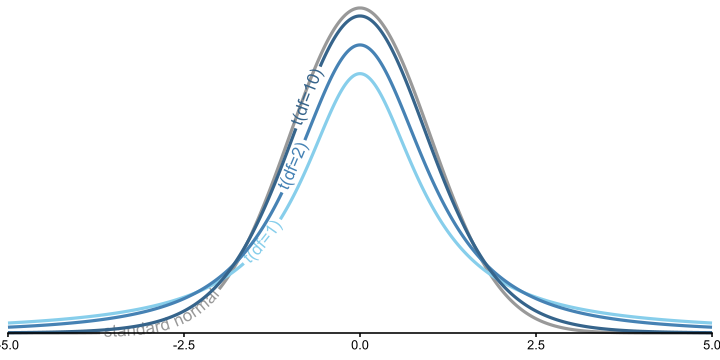
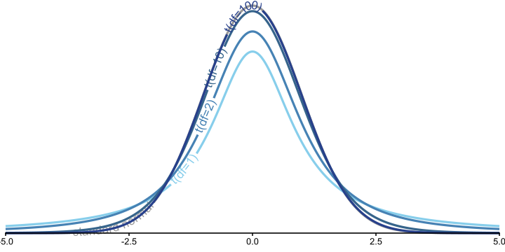
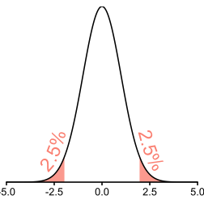
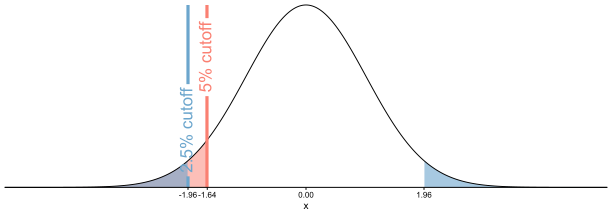

T-Tests
PSYC 6019-A01 / PSYC 6022-A01
2025-09-25 | Lab 5
Jess Helmer
Outline
One sample t-test
Independent samples t-test
Paired samples t-test
From Z to T: No longer normal
Z- vs. T-Distribution
t-distribution has thicker tails than a normal distribution
As df increases, it looks more like a standard normal distribution
With df = \(\infty\), exactly follows a normal distribution (so approximates with large df)
Z- vs. T-Distribution

Z- vs. T-Distribution

Z- vs. T-Distribution

Z- vs. T-Distribution

Z- vs. T-Distribution

T-Distribution Explorer
Probability Playground: t-distribution
T-Test: How many tails?
Need to consider whether to use a “one-tail” or “two-tail” t-test.
One-Tail (One-Sided)
We want to test whether something is lower or higher than a value, but not both
Only one limit
Two-Tails (Two-Sided)
We want to test whether something is either lower or higher than a value
Two limits
Testing: How many tails?
Need to consider whether to use a “one-tail” or “two-tail” t-test.
One-Tail (One-Sided)
Two-Tails (Two-Sided)

Testing: How many tails?
Notice that two-tailed tests are harder to “beat.”

Types of T-Tests

One-Sample T-Test
One-Sample T-Test Generally
Asks “is there a question between our sample and the population?”
Derived with sample mean (\(\bar{x}\)), population mean (\(\mu\)), and standard error (\(SE = \frac{s}{\sqrt n}\))
\[t = \frac{\bar{x} - \mu}{SE} = \frac{\bar{x} - \mu}{\frac{s}{\sqrt{n}}}\]
With a t-test, we don’t have a known population SD (\(\sigma\)), so we use the SD we observe in our sample \(s\).
Often, we compare our sample mean to a hypothesized mean of zero
\(H_0\): \(\mu = 0\)
\(H_1\): \(\mu \neq 0\)
If that’s the case, our t-statistic calculation reduces to
\(t \bigg|_{\mu = 0} = \frac{\bar{x} - 0}{\frac{s}{\sqrt{n}}} = \frac{\bar{x}}{\frac{s}{\sqrt{n}}}\)
T-Test Example
Let’s you work for a car manufacturer, and a researcher claims the average city miles per gallon across all cars is 30mpg. They collect data on a sample of 234 cars and would like you to test this. We do not know the population standard deviation.
One- or two-tailed? Two!
Our observed t-statistic exceeds our cutoff t-statistic, so we reject the null.
T-Test Function
Alternatively, we can use t.test(x, mu = 0, alternative = "two.sided")
○
x = vector of numeric data
○
mu = hypothesized population mean (default is 0)
○
alternative = one of "two.sided", "less", "greater" (default is "two.sided")
t.test(mpg$cty, mu = 30, alternative = "two.sided")
One Sample t-test
data: mpg$cty
t = -47.233, df = 233, p-value < 2.2e-16
alternative hypothesis: true mean is not equal to 30
95 percent confidence interval:
16.31083 17.40712
sample estimates:
mean of x
16.85897 We see a significant difference between our observed sample mean and our hypothesized population mean.
T-Test Assumptions
We can create QQ plots with ggplot
New geoms: geom_qq()adds the points,geom_qq_line()` adds the expected line.
The aes() we need to specify is sample
T-Test Example Output
cty_ttest <- t.test(mpg$cty, mu = 30, alternative = "two.sided")
cty_ttest
One Sample t-test
data: mpg$cty
t = -47.233, df = 233, p-value < 2.2e-16
alternative hypothesis: true mean is not equal to 30
95 percent confidence interval:
16.31083 17.40712
sample estimates:
mean of x
16.85897 #?t.testcty_ttest$statistic t
-47.23252 cty_ttest$p.value[1] 2.581229e-121cty_ttest$conf.int[1] 16.31083 17.40712
attr(,"conf.level")
[1] 0.95T-Test Confidence Intervals
Let’s build a confidence interval around our estimated mean
\[ CI = [\bar{x} - t_{crit} \times s_{\bar{x}}, \ \bar{x} + t_{crit} \times s_{\bar{x}}] \]
○ \(\bar{x}\) = our observed mean
○ \(t_{crit}\) = our critical t value
○ \(s_{\bar{x}}\) = the standard error of our outcome
T-Test Confidence Intervals
ci_lower <- x_bar - t_cutoff * x_se
ci_upper <- x_bar + t_cutoff * x_se
c(ci_lower, ci_upper)[1] 16.31083 17.40712Across repeated trials, 95% of intervals (across repeated samples) will contain the true value. [16.31, 17.41] is one such interval.
If we treated any value inside the 95% confidence interval of [16.31, 17.41] as the null, we could not reject it at \(\alpha = 0.05\).
T-Test Example
Let’s say a different researcher claims the average city miles per gallon across all cars is 50mpg. They collect a sample of 234 cars. You are confident they are wrong—you think it is certainly less than that. We do not know the population standard deviation.
One- or two-tailed? One!
t.test(mpg$cty, mu = 50, alternative = "less")
One Sample t-test
data: mpg$cty
t = -119.12, df = 233, p-value < 2.2e-16
alternative hypothesis: true mean is less than 50
95 percent confidence interval:
-Inf 17.31843
sample estimates:
mean of x
16.85897 We see a significant difference between our observed sample mean and our hypothesized population mean of 50 city MPG.
T-Statistic Cutoffs
Say you want to find the cutoff t values: \(t(\text{df}=3)\) and \(t(\text{df}=37)\) for \(\alpha = .05\), both upper one-tailed and two-tailed.
Which will have the larger magnitude cutoff values?
One-Tailed
All of our \(\alpha = .05\) goes on the upper side
Need a cutoff for \(.95\)
\(t_{crit}(\text{df}=3) = 2.35\)
\(t_{crit}(\text{df}=37) = 1.69\)
Two-Tailed
\(\alpha = 1 - .95 = 5\%\) on both sides
So \(.05 / 2 = .025\) on each side
Need value for \(.025\) and \(.95 + .025\) (\([.025, .975]\))
[1] -3.182446 3.182446[1] -2.026192 2.026192\(t_{crit}(\text{df}=3) = [-3.18, 3.18]\)
\(t_{crit}(\text{df}=37) = [-2.03, 2.03]\)
Independent Samples T-Test
Independent Samples T-Test
Might want to compare two samples of observations
○ Post-graduation salaries of GT vs. UGA grads
○ Treatment vs. control group
○ Cats vs. dogs
We can represent each group with their mean on some outcome and compare the means
Consider whether the mean difference is significant but also have to account for different levels of variability within group
Independent Samples T-Test: Test Statistic
\[ t = \frac{\bar{x}_1 - \bar{x}_2}{\sqrt{\frac{s_p^2}{n_1} + \frac{s_p^2}{n_2}}} = \frac{\bar{x}_1 - \bar{x}_2}{s_p\sqrt{\frac{1}{n_1} + \frac{1}{n_2}}} \]
Compare against critical t-value with df = \((n_1 - 1) + (n_2 - 1)\)
Independent Samples T-Test: Pooled SD
Need to pool the sample SDs while noting different sample sizes
\[ s_p^2 = \frac{(n_1 - 1) s_1^2 + (n_2 - 1) s_2^2}{(n_1 - 1) + (n_2 - 1)} = \frac{(n_1 - 1) s_1^2 + (n_2 - 1) s_2^2}{n_1 + n_2 - 2}\]
Independent Samples T-Test: Pooled SD
Note that when sample size is equal (i.e., \(n_1 = n_2 = n\)),
\[\begin{array}{ll}
s_p^2 \bigg|_{n_1 = n_2 = n} & = \frac{(n - 1) s_1^2 + (n - 1) s_2^2}{(n - 1) + (n - 1)} = \frac{(n - 1) (s_1^2 + s_2^2)}{(n - 1) + (n - 1)} \\[0.6em]
& = \frac{(n - 1) (s_1^2 + s_2^2)}{2(n - 1)} = \frac{s_1^2 + s_2^2}{2}
\end{array}\]
Square root to get back to standard deviation
\[ s_p = \sqrt{s_p^2} = \sqrt{\frac{(n_1 - 1) s_1^2 + (n_2 - 1) s_2^2}{(n_1 - 1) + (n_2 - 1)}} = \sqrt{\frac{(n_1 - 1) s_1^2 + (n_2 - 1) s_2^2}{n_1 + n_2 - 2}} \]
Independent Samples T-Test: Example
Let’s say you work for a car manufacturer, and you’re helping decide features of the next car you produce. You want to test whether there’s a difference in highway MPG for cars with four and eight cylinders. You have a dataset with 234 cars to test this on.
Independent Samples T-Test: R Calculation
\[ t = \frac{\bar{x}_1 - \bar{x}_2}{\sqrt{\frac{s_p^2}{n_1} + \frac{s_p^2}{n_2}}} = \frac{\bar{x}_1 - \bar{x}_2}{s_p\sqrt{\frac{1}{n_1} + \frac{1}{n_2}}} \]
\[ s_p^2 = \frac{(n_1 - 1) s_1^2 + (n_2 - 1) s_2^2}{(n_1 - 1) + (n_2 - 1)} \]
Independent Samples T-Test: R Calculation
If our observed t-statistic exceeds the bounds of [-1.98, 1.98], we reject the null.
t_stat <- (x_bar_four - x_bar_eight) / se
t_stat[1] 17.18575We reject the null! Can we tell which had a larger mean?
Independent Samples T-Test: CI
Let’s build a confidence interval around our estimated difference in means
\[ CI = [\bar{d} - t_{crit} \times s_{\bar{x}}, \ \bar{d} + t_{crit} \times s_{\bar{x}}] \]
○ \(\bar{d}\) = our observed mean difference (\(\bar{x}_{\text{group 1}} - \bar{x}_{\text{group 2}}\))
○ \(t_{crit}\) = our critical t value
○ \(s_{\bar{x}}\) = the standard error of our outcome
x_bar_difference <- x_bar_four - x_bar_eight
x_bar_difference + t_crits * se[1] 9.889126 12.458669Independent Samples T-Test: R Function
t.test(outcome ~ group_var, data, var.equal = T)
○
var.equal = T: tells R not to use the Welch-Satterthwaite correction
○ for demonstration. Generally, we can leave it to its default (if you don’t specify
var.equal = T, it will default to var.equal = F!
t.test(hwy ~ cyl, filtered_mpg, var.equal = T)
Two Sample t-test
data: hwy by cyl
t = 17.186, df = 149, p-value < 2.2e-16
alternative hypothesis: true difference in means between group 4 and group 8 is not equal to 0
95 percent confidence interval:
9.889126 12.458669
sample estimates:
mean in group 4 mean in group 8
28.80247 17.62857 Independent Samples T-Test Assumptions
Differentiate groups by specifying the group aesthetic
Look for normality and homogeneity of variance: both groups have the same variance
Homogeneity of Variance
Homogeneity of variance assumption:
GOOD
BAD
Paired Samples T-Test
Paired Samples T-Test
Comparing the same subjects under two conditions (often two timepoints)
○ Stress levels before vs. after a test
○ Reaction times before vs. after caffiene consumption
○ Anxiety levels before vs. after a mindfulness intervention
We can still use the mean to represent the observations in each condition and make comparisons
This time, focus on difference scores (individual differences in the observations between the two conditions)
Paired Samples T-Test
Need difference score for each observation \(d_i = x_{2_i} - x_{1_i}\)
Then, get mean difference \(\bar{d} = \frac{d_1 \ + \ d_2 \ + \ ... \ + \ d_n}{n}\) and standard deviation of those difference scores \(s_d = \sqrt{\frac{(d_1-\bar{d})^2 \ + \ (d_2-\bar{d})^2 \ + \ ... \ + \ (d_n-\bar{d})^2}{n - 1}}\)
\[ t = \frac{\bar{d} - \mu_{d_0}}{\frac{s_d}{\sqrt{n}}} = \text{(usually)} \frac{\bar{d} - 0}{\frac{s_d}{\sqrt{n}}} = \frac{\bar{d}}{\frac{s_d}{\sqrt{n}}}\]
Compare against critical t-value with df = \(n - 1\)
Paired Samples T-Test: R Example
You own an ice cream shop, and you want to decide which flavor of ice cream (vanilla or cookie dough) you want to run a promotion for! The promotion would be for the ice cream flavor that has been selling less. For 20 days, you track the sales of each ice cream flavor.
Rows: 40
Columns: 3
$ flavor <chr> "vanilla", "vanilla", "vanilla", "vanilla", "vanilla", "vanilla…
$ sales <dbl> 49.17, 52.01, 51.47, 48.10, 53.97, 50.30, 55.69, 51.83, 46.02, …
$ day <int> 1, 2, 3, 4, 5, 6, 7, 8, 9, 10, 11, 12, 13, 14, 15, 16, 17, 18, …Paired Samples T-Test: Difference Scores
For a paired samples t-test, our unit of analysis is a difference score. So, currently, this data is too long! Let’s pivot and create some difference scores.
ice_cream_cleaned <- ice_cream_sales |>
pivot_wider(names_from = flavor, values_from = sales) |>
mutate(difference = vanilla - cookie_dough)
head(ice_cream_cleaned)# A tibble: 6 × 4
day vanilla cookie_dough difference
<int> <dbl> <dbl> <dbl>
1 1 49.2 46.8 2.41
2 2 52.0 48.9 3.1
3 3 51.5 40.0 11.5
4 4 48.1 45.1 2.96
5 5 54.0 43.0 11.0
6 6 50.3 40.5 9.84Paired Samples T-Test: R Calculation
Paired Samples T-Test: R Calculation
If our observed t-statistic exceeds the bounds of [-2.09, 2.09], we reject the null.
t_stat <- obs_mean_diff / se_diff
t_stat[1] 4.823637Paired Samples T-Test: R Calculation
Let’s build a confidence interval around our estimated difference in means
\[ CI = [\bar{d} - t_{crit} \times s_{\bar{x}}, \ \bar{d} + t_{crit} \times s_{\bar{x}}] \]
○ \(\bar{d}\) = our observed mean difference (\(\bar{x}_{\text{group 1}} - \bar{x}_{\text{group 2}}\))
○ \(t_{crit}\) = our critical t value
○ \(s_{\bar{x}}\) = the standard error of our outcome
ci <- obs_mean_diff + t_crits * se_diff
ci[1] 5.24256 13.27944CI: [5.24, 13.28]
Paired Samples T-Test: R Function
t.test(y1_vector, y2_vector, paired = T)
t.test(ice_cream_cleaned$vanilla, ice_cream_cleaned$cookie_dough, paired = T)
Paired t-test
data: ice_cream_cleaned$vanilla and ice_cream_cleaned$cookie_dough
t = 4.8236, df = 19, p-value = 0.000118
alternative hypothesis: true mean difference is not equal to 0
95 percent confidence interval:
5.24256 13.27944
sample estimates:
mean difference
9.261 Paired Samples T-Test Assumptions
Not many data points… QQ-plot at least seems OK!
T-Test: Interpretation and write-up
An [independent samples / paired samples] t-test analysis was conducted between [group 1] and [group 2]. We [fail to reject / reject] \(H_0\) [in favor of \(H_1\)], t([df]) = [____], p [< 0.05 / p-value]. We [did not] observe[d] a significant difference between the mean [outcome] of [group 1] and [group 2] in our sample.